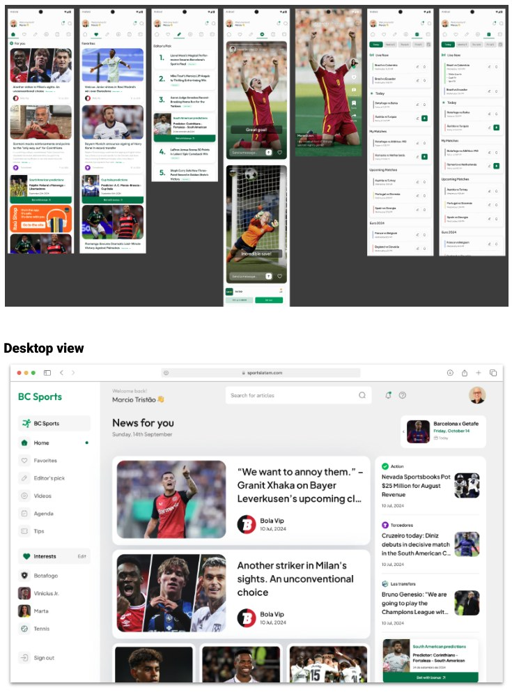
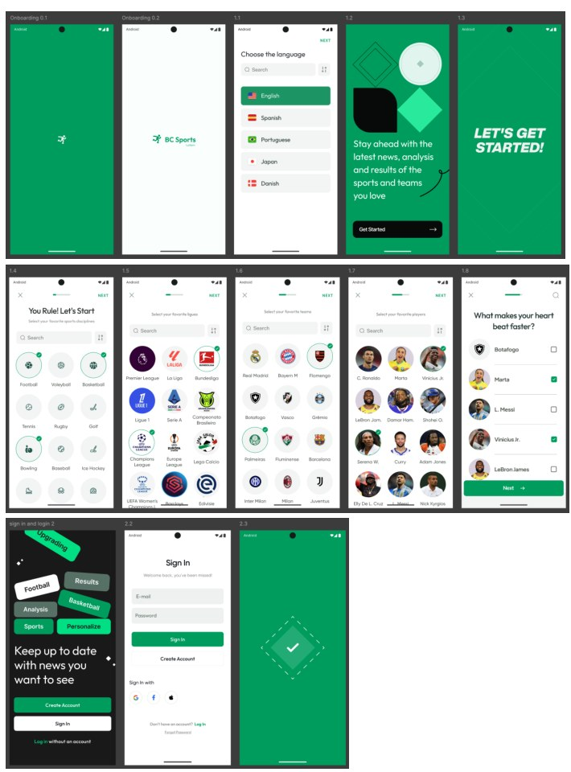
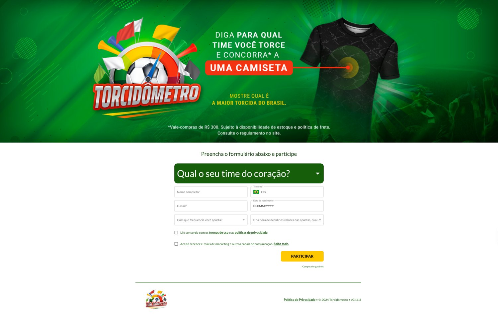

🇧🇷 Executivo com mais de 25 anos de experiência em gestão de produtos digitais, UX e estratégia. Lidero equipes multidisciplinares, desenvolvo produtos escaláveis e inovadores e gero impacto mensurável no negócio. Atuo com métodos ágeis, MVPs, POCs, testes A/B e decisões orientadas por dados. Comunico conceitos complexos com clareza e promovo alinhamento entre executivos e stakeholders.
Destaques:
✨ Liderança multifuncional: Experiência em posições técnicas e gerenciais, integrando equipes multidisciplinares em estruturas matriciais e ambientes ágeis.
🌉 Da estratégia à execução: Transformo estratégias em resultados, conectando visão de negócio e execução com minha experiência em UX/UI/CX.
🌍 Soluções em escala: Desenhei e liderei soluções que processam bilhões de requisições por dia e atendem centenas de milhões de usuários.
💡 Inovação centrada no usuário: Uso testes contínuos para aprender com o comportamento real dos usuários e transformar insights em melhorias.
📊 Decisões orientadas por dados: Utilizo testes A/B para validar hipóteses, otimizar estratégias e embasar decisões.
O que me motiva:
Aprender, evoluir e inovar. Gosto de colaborar com profissionais de diferentes culturas e enfrentar desafios que me impulsionem a superar metas, entregar excelência e gerar valor.
🇺🇸 Executive with 25+ years of experience in Digital Product Management, UX, and Product Strategy. Skilled in leading multidisciplinary teams, delivering scalable and innovative digital products, and driving measurable business impact. Expertise in agile methodologies, MVPs, POCs, A/B testing, and data-driven decision-making. Strong communicator with the ability to articulate complex concepts to executives and stakeholders, ensuring alignment and success across projects.
Key Highlights:
✨ Leadership Across Functions: Proven expertise in both technical and managerial roles, excelling in multidisciplinary teams, matrix organizations, and agile methodologies.
🌉 Strategic-Execution Bridge: Leveraging a robust UX/UI/CX background to align strategic goals with precise project execution.
🌍 Scalable Solutions at Scale: Designed, developed, and managed solutions that handle billions of daily requests, serving hundreds of millions of users globally.
💡 User-Centric Innovation: Advocate for continuous software trials, learning rapidly from real-world user behavior to turn insights into actionable challenges.
📊 Data-Driven Decision-Making: Championing A/B testing to validate hypotheses, optimize strategies, and foster informed data-backed decisions.
What Drives Me:
A relentless desire to learn, evolve, and innovate across industries, fueled by collaboration with talented professionals from diverse cultures. I thrive in environments that challenge me to exceed goals, deliver excellence, and create value at every step.
Experience
Group Product Manager | EdTech | Portfolio Management, Growth, AI | B2C
November 2025 – Present
Lead the Bridge Tribe: 5 Product Managers and 1 Product Design Coordinator across 5 squads (Acquisition, Mentoring, AI, Preparatory Courses and CRM), within a B2C portfolio serving more than 56,000 physician-students. Currently leading the medical updates (News) and physicians’ social network value streams on the new platform.
RESPONSIBILITIES
Product strategy, roadmap and OKRs across the physician journey, from acquisition to postgraduate education
Portfolio management for board certification and medical residency preparatory courses, and postgraduate programs (hybrid, in-person and online)
Growth across the acquisition funnel and checkout, focused on B2C conversion and revenue
Structuring AI and CRM initiatives for product
Advancing the Mentoring product, focused on engagement, retention, approval rates and NPS
Scrum and Kanban squad management; Product Analytics for acquisition, conversion and retention KPIs
Revenue-oriented roadmap prioritization, with active participation in segment P&L decisions
RESULTS / IMPACT
Continuing Education student base grew 23.6% to 56,237 (Q2 2026 vs. Q2 2025)
B2C revenue of BRL 134.8 million in H1 2026, up 7.5% vs. H1 2025
Postgraduate student base grew 12.8% to 10,213; other courses grew 35.1% to 36,780 students
Multi-product checkout enabled postgraduate and other products to be purchased in a single order
AI applied to identifying outdated educational content
Why “Bridge”? The name was intended to help teams feel connected to the future and part of building the new platform, rather than simply maintaining a legacy system.
Group Product Manager, LATAM | iGaming | Monetization, Growth, AI | B2C, B2B
November 2023 – April 2025
Managed the LATAM portfolio (Mexico, Argentina, Chile and Brazil) for a global sports media and iGaming group, representing 20% of global revenue.
RESPONSIBILITIES
Portfolio management for 25 football websites, expanding commercial inventory and programmatic media
Growth and monetization through AI, MarTech and SEO (with Google Analytics) in the user acquisition strategy
Go-to-market of the Loyalty Program, from proof of concept to scale, focused on retention
Development of B2B partnerships across media, insurance, sporting goods and betting
Led post-merger integration (PMI) for a group of 300+ professionals, aligning 5 functions across 4 countries with headquarters’ operating models, processes and tools
Influenced multidisciplinary project, engineering, editorial and content teams without direct reporting lines
Scrum and Kanban with multidisciplinary teams; Product Analytics to guide acquisition and monetization
Revenue-oriented portfolio prioritization, with active participation in regional P&L decisions
RESULTS / IMPACT
LATAM portfolio generated 20% of global revenue
60,000 Loyalty Program users in the first three months, starting with a lean proof of concept using WhatsApp groups
Closed 2 B2B partnerships (insurance and sporting goods), opening a new revenue stream from user and lead data
Presented a new product prototype to LATAM leadership, validating the initial product-market-fit hypothesis for the Loyalty Program
Completed PMI, from organizational mapping through transition to permanent leadership
Group Product Manager | GShow, Big Game BBB, Receitas.com | Monetization | B2C, B2B
January 2021 – May 2023
Led 3 product squads (GShow, Receitas.com and special projects such as Screening, Globo’s B2B content acquisition platform), directly managing 3 Product Managers and 15+ product, design and engineering professionals.
RESPONSIBILITIES
Product strategy and execution focused on audience growth, monetization and innovation across digital and streaming platforms
Product strategy and go-to-market for Big Game BBB, a B2C fantasy game launched for BBB22; contributed to planning the next edition, which was not launched
Monetization through AdTech (paid views and banners) and Video Shopping, with engagement supported by MarTech and SEO
UX: prototypes, usability testing and user feedback to validate MVPs and product-market fit
Scrum and Kanban squad management; Product Analytics for audience, engagement and revenue
Revenue-oriented roadmap prioritization, with active participation in product P&L decisions
RESULTS / IMPACT
Big Game BBB 2022: 300,000+ registered users, 103,000 groups and 12 million predictions in its debut edition
30% retention from the first round through the final, with 34,000 mentions on X
Exceeded the video views target by 10% in the first half of 2023
Video Shopping partnerships with C&A, L’Oréal and Dengo Chocolates, diversifying revenue streams
Receitas.com: +36% growth in search authority through SEO
Screening (B2B): content update time reduced to under 5 minutes, improving customer SLAs
Group Product Manager | GloboEsporte and Cartola | Growth, Monetization | B2C
November 2013 – December 2020
Directly managed 5 Product Managers, leading designers and data scientists in squads with 80+ direct and indirect contributors, responsible for GloboEsporte.com and Cartola, a fantasy game with 4 million active players.
RESPONSIBILITIES
Unified product vision for GloboEsporte.com and Cartola, focused on growth, retention and monetization
A/B testing on GloboEsporte.com: content recommendations (algorithm vs. editorial), user registration elements and subscriber conversion
Go-to-market for Cartola PRO: freemium B2C paid model, in-game sponsorships and iOS and Android apps
Push strategies to increase recurrence and reduce churn
Mobile-first UX redesigns after the 2014 World Cup and 2016 Olympics, using live-event data
Unified Globo, Sportv and Premiere broadcasts to attract audiences and drive upsell
Scrum and Kanban squads; Product Analytics and P&L participation to prioritize roadmaps by revenue
RESULTS / IMPACT
Cartola PRO reached a peak of 500,000 paying users out of a 4 million-user base, a 12.5% conversion rate
Up to 40% of Premiere subscriptions generated by GloboEsporte.com
Daily mobile visits increased 2–5x in 2014 after the mobile-first redesign
Ad revenue growth through unified broadcast offerings and in-game sponsorships
Modernized Cartola UX with real-time data, attracting younger audiences and converting users during live matches
Group Product Manager | G1 and News Products | Growth, SEO | B2C
January 2010 – November 2013
Led G1 product strategy and execution, focused on consolidating the portal’s position as Brazil’s leading news destination. Directly managed 2 Product Managers and led 15+ developers and designers.
RESPONSIBILITIES
B2C audience growth through data-driven solutions and semantic content structuring for SEO
News product portfolio management, including the creation of Economy and Automotive verticals and integrated partner services
Monetization through new advertising investment opportunities supported by audience growth
Integration across product, UX and people development
Scrum and Kanban team management; Product Analytics to track audience and guide prioritization, with participation in P&L decisions
RESULTS / IMPACT
Added approximately 2 million unique users through the launch of the Economy and Automotive portals and semantic content structuring, consolidating leadership in the News category (Comscore)
Increased media revenue through new commercial opportunities
Launched 2 new verticals: Economy and Automotive
Improved visibility in Google search
Skills: Product Strategy, Growth, Portfolio Management, Monetization, SEO, Data-Driven Product, UX, B2C, Digital Media, Ad Revenue, Product Analytics, Scrum, Kanban
Information Architecture Manager | Product Owner, Globo.com Homepage
January 2006 – December 2009
RESPONSIBILITIES
Led a team of 20–25 Information Architects and Designers, restructuring the team around people, performance and culture
Served as Product Owner for the Globo.com homepage, defining its navigation and content structure
Organized and highlighted News, Sports and Entertainment content on the homepage, directing audiences to the portal’s key products
Introduced continuous performance reviews, career development programs and active mentoring
RESULTS / IMPACT
Achieved zero turnover in a team of 20–25 professionals, from a baseline of one departure per month, while increasing team engagement
Increased homepage audience distribution to key News, Sports and Entertainment products
Implemented continuous performance reviews and career development programs
Led the transition from Information Architecture to Product, taking on the Globo.com homepage as Product Owner
Skills: Information Architecture, UX, Product Ownership, People Management, Talent Development, Mentoring, Content Strategy, Navigation Design, Digital Media
Senior Information Architect
April 2001 – December 2006
Senior Information Architect responsible for product conceptualization, flow detailing and system specifications across globo.com, globonews.com, g1.com.br, globoesporte.com, Ego, Paparazzo and other products, contributing to their prominence in their respective categories.
Skills: Information Architecture, Product Design, UX
Entrepreneur | Web Writer, Information Architect
January 1999 – March 2001
Developed websites for major clients like BR Distribuidora and Petrobras, and contributed articles to leading publications.
Skills: Web Writing, Information Architecture
Public Relations
December 1996 – January 1999
Managed internal and external communications, fostering strong relationships between the company and its stakeholders.
Skills: Public Relations
03 / SELECTED WORK
Selected Work
Product work across digital media, engagement, growth and monetization.
Hub Esportivo: escalar e personalizar conteúdo com IA
Uma estratégia para conectar conteúdo esportivo local e internacional, ampliar a distribuição com IA e construir uma experiência personalizada para torcedores na América Latina.
01 · ScaleIA para traduzir e distribuir conteúdo internacional em escala.
02 · DifferentiateMarcas locais, especialização editorial e profundidade de cobertura.
03 · PersonalizePreferências, comportamento e curadoria para organizar a descoberta.
04 · MonetizeMais inventário de conteúdo e oportunidades comerciais.

Experiência desktop do Hub Esportivo · Sports Hub desktop experience

Onboarding e seleção de preferências · Onboarding and preference selection
PT-BR
Contexto e oportunidade
A Better Collective reunia 25 marcas esportivas independentes na América Latina, com conhecimento editorial e presença local em diferentes mercados.
Ao mesmo tempo, mais de 2 milhões de artigos produzidos em outros mercados não geravam retorno relevante na região. Havia uma oportunidade de conectar esse conteúdo ao público latino-americano, ampliar sua distribuição e fortalecer o ecossistema de marcas locais.
A proposta também buscava aumentar a visibilidade dessas marcas e oferecer uma cobertura esportiva mais variada e aprofundada, apoiada por equipes especializadas, com acesso a atletas, técnicos, clubes e patrocinadores locais.
Visão de produto
Criar um hub esportivo personalizado, capaz de reunir conteúdos locais e internacionais em uma experiência organizada pelos interesses de cada usuário.
A experiência combinaria preferências declaradas, comportamento de navegação e curadoria editorial para conectar torcedores a esportes, competições, times e diferentes perspectivas sobre o universo esportivo.
Estratégia: Scale + Differentiation
Scale — Escala com IA. Reaproveitar a capacidade de tradução por IA para distribuir conteúdo internacional em diferentes idiomas e mercados da América Latina, ampliando o catálogo disponível e o potencial de alcance.
Differentiation — Diferenciação editorial. Fortalecer as marcas locais, sua especialização editorial e a profundidade da cobertura esportiva. O objetivo era construir a percepção de um ecossistema com mais variedade, conhecimento e relevância local.
Principais decisões de produto
Personalização: permitir que usuários selecionassem esportes, times, competições e atletas de interesse.
Descoberta: combinar preferências declaradas, comportamento e curadoria editorial para organizar o feed.
Experiência inicial: para novos usuários sem histórico, priorizar conteúdos mais acessados nas últimas 24 a 48 horas.
Conteúdo local: apresentar uma chamada ou prévia no hub e direcionar o usuário para a matéria original, publicada na marca local.
Conteúdo internacional: traduzir e publicar o artigo em uma nova URL do hub, permitindo seu consumo integral na plataforma.
Distribuição e SEO: estruturar a publicação e a conexão entre os conteúdos locais e internacionais considerando os impactos sobre descoberta orgânica e presença das marcas.
Monetização: ampliar o inventário de conteúdo e as oportunidades comerciais, incluindo publicidade e ofertas afiliadas.
Tecnologia e viabilidade com IA
Um dos desafios era desenvolver uma solução robusta e escalável para traduzir grandes volumes de conteúdo, considerando diferentes idiomas, origens e destinos.
A capacidade de tradução por IA já estava em operação em outras frentes. Trabalhei com a liderança de Engenharia de IA para discutir a viabilidade de reaproveitar essa capacidade e conectá-la à experiência proposta para o hub.
A especificação técnica completa não foi aprofundada nessa etapa. A decisão foi priorizar um teste mais simples e econômico antes de assumir o investimento de desenvolvimento de uma plataforma mais complexa.
Validação Lean
A abordagem priorizou aprendizado e aquisição de dados antes de um investimento maior em tecnologia. A primeira entrega concentrou-se em três componentes:
Landing page: experiência para apresentar a proposta e captar usuários.
Armazenamento de dados: estrutura para registrar as informações declaradas no cadastro.
Dashboard: acompanhamento dos dados e análise de indicadores para identificar oportunidades e orientar decisões.
A experiência de cadastro da POC Torcidômetro ilustra essa abordagem: uma landing page com seleção do time, dados pessoais, informações de contato e perguntas sobre hábitos e perfil de apostas. Após o cadastro, o usuário recebia a confirmação e um convite para continuar o relacionamento pelo WhatsApp.

POC Torcidômetro: uma landing page e um formulário simples para testar a proposta.
Indicadores de sucesso
Aquisição e dados
Número de usuários cadastrados.
Usuários com até três informações de preferência declaradas.
Usuários com mais de três informações de preferência declaradas.
Engajamento
Crescimento dos cliques nas seções.
Crescimento de pageviews e consumo por seção.
Monetização
Aumento do inventário disponível para o time comercial.
Aumento do volume de impressões publicitárias entregues.
Minha atuação
Concebi e estruturei a visão do produto, transformando a oportunidade de negócio em uma proposta de experiência e estratégia para a América Latina.
Trabalhei com dois Product Designers na construção do conceito e do protótipo. Também conduzi as discussões de viabilidade com a liderança técnica de IA, conectando a oportunidade de produto às capacidades tecnológicas existentes.
Apresentei a proposta à liderança sênior da região e ajudei a definir uma abordagem de validação progressiva: começar pela aquisição e análise de dados, reduzir o custo inicial de experimentação e gerar evidências antes de avançar para o desenvolvimento completo.
Aprendizado e desdobramento
O trabalho também contribuiu para amadurecer a hipótese de um programa de Loyalty conectado ao ecossistema esportivo.
Essa frente foi validada separadamente, por meio de uma POC baseada em grupos de WhatsApp, que alcançou 60 mil usuários em três meses.
Esse resultado pertence à iniciativa de Loyalty, não ao Hub Esportivo.
A experiência reforçou o valor de testar hipóteses com estruturas leves antes de ampliar o investimento em produto e tecnologia.
ENGLISH
Context and opportunity
Better Collective brought together 25 independent sports media brands across Latin America, combining local market presence with specialized editorial knowledge.
At the same time, more than 2 million articles produced in other markets were not generating meaningful returns in the region. This represented an opportunity to connect that content with Latin American audiences, expand its distribution, and strengthen the ecosystem of local brands.
The initiative also aimed to increase the visibility of local brands and provide broader, deeper sports coverage, supported by specialized editorial teams with access to athletes, coaches, clubs, and local sponsors.
Product vision
Create a personalized sports hub that brings together local and international content in an experience organized around each user's interests.
The experience would combine declared preferences, browsing behavior, and editorial curation to connect fans with sports, competitions, teams, and different perspectives across the sports ecosystem.
Strategy: Scale + Differentiation
Scale — AI-powered distribution. Leverage existing AI translation capabilities to distribute international content across different languages and Latin American markets, expanding the available content catalog and its potential reach.
Differentiation — Editorial depth. Strengthen local brands, their editorial specialization, and the depth of sports coverage. The goal was to build the perception of a broader ecosystem offering greater variety, expertise, and local relevance.
Key product decisions
Personalization: allow users to select their preferred sports, teams, competitions, and athletes.
Discovery: combine declared preferences, behavioral signals, and editorial curation to organize the feed.
First-time experience: for users without browsing history, prioritize the most accessed content from the previous 24 to 48 hours.
Local content: display a headline or preview in the hub and direct users to the original article published on the local brand's website.
International content: translate and publish articles under new hub URLs, allowing users to consume the full content within the platform.
Distribution and SEO: structure content publishing and connections between local and international content, considering their impact on organic discovery and brand presence.
Monetization: expand the content inventory and commercial opportunities, including advertising and affiliate offers.
Technology and AI feasibility
One of the main challenges was developing a robust, scalable solution to translate large volumes of content across multiple languages, origins, and destinations.
AI translation capabilities were already operating in other initiatives. I worked with AI Engineering leadership to explore the feasibility of reusing those capabilities and connecting them to the proposed hub experience.
The full technical specification was not developed at this stage. The decision was to prioritize a simpler, lower-cost test before committing to the investment required for a more complex platform.
Lean validation
The approach prioritized learning and data acquisition before making a larger technology investment. The initial delivery focused on three components:
Landing page: an experience to introduce the proposition and acquire users.
Data storage: a structure to capture and store information submitted during registration.
Dashboard: a way to monitor data and analyze indicators to identify opportunities and inform decisions.
The Torcidômetro POC registration experience illustrates this approach: a landing page capturing team preferences, personal details, contact information, and answers about betting habits and profile. After registration, users received a confirmation and an invitation to continue the relationship through WhatsApp.
Success metrics
Acquisition and data
Number of registered users.
Users with up to three declared preference data points.
Users with more than three declared preference data points.
Engagement
Growth in clicks across sections.
Growth in pageviews and content consumption by section.
Monetization
Increase in inventory available to the commercial team.
Increase in the volume of advertising impressions delivered.
My contribution
I conceived and structured the product vision, translating the business opportunity into a product experience and strategy for Latin America.
I worked with two Product Designers to develop the concept and prototype. I also led feasibility discussions with AI technical leadership, connecting the product opportunity with existing technological capabilities.
I presented the proposal to regional senior leadership and helped define a progressive validation approach: start with acquisition and data analysis, reduce initial experimentation costs, and generate evidence before moving forward with full-scale development.
Learning and next steps
The work also helped shape the hypothesis for a Loyalty program connected to the sports ecosystem.
That initiative was validated separately through a WhatsApp group-based POC, which reached 60,000 users in three months.
This result belongs to the Loyalty initiative, not the Sports Hub.
The experience reinforced the value of testing hypotheses through lightweight experiments before scaling investment in product and technology.
25Marcas esportivas locais / Local sports brands
2M+Artigos internacionais / International articles
2Product Designers no conceito / on concept
Torcidômetro is shown as evidence of the lean registration approach. Its user results are not attributed to the Sports Hub.
Big Game BBB: uma experiência de fantasy game para ampliar o engajamento
Uma experiência de fantasy game que transformou o maior reality show do Brasil em um jogo de engajamento.
PT-BR
O desafio
O Big Game BBB nasceu como uma prova de conceito para aumentar o engajamento dos fãs nos períodos de menor relevância do programa na TV e estimular o consumo de conteúdo no GShow.
A hipótese se apoiava no comportamento dos jogadores de fantasy games: dados do Cartola indicavam que eles consumiam de duas a três vezes mais conteúdo do que os demais usuários.
Minha atuação
Acompanhei o produto de ponta a ponta, da concepção à evolução durante a temporada. Atuei como consultor e coordenador, orquestrando equipes multidisciplinares e estimulando a autonomia de designers, desenvolvedores, cientistas de dados e outros profissionais envolvidos.
Minha experiência em desenvolvimento de software, métricas de consumo e engajamento, comportamento do usuário e fantasy games ajudou a orientar decisões e conectar as diferentes frentes de trabalho.
Também liderei o alinhamento com equipes de plataforma, aproveitando soluções existentes, como login, enquetes e votação, para acelerar a entrega. A gestão de stakeholders foi fundamental para alinhar expectativas, prioridades e entregas a cada release.
EN
The challenge
Big Game BBB started as a proof of concept to increase fan engagement during periods when the show had lower relevance on TV and encourage greater content consumption on GShow.
The hypothesis was based on fantasy game user behavior: Cartola data indicated that fantasy players consumed two to three times more content than other users.
My role
I followed the product end to end, from its conception to its evolution throughout the season. Acting as a product advisor and coordinator, I orchestrated cross-functional teams while encouraging designers, developers, data scientists and other contributors to work autonomously.
My experience in software development, consumption and engagement metrics, user behavior and fantasy games helped guide decisions and connect different workstreams.
I also coordinated alignment with platform teams, leveraging existing capabilities such as login, polls and voting to accelerate delivery. Stakeholder management was essential to align expectations, priorities and deliverables across releases.
300K+Registered users
12M+Predictions · season
1M+Predictions · round
103KGroups · avg. per round
30%Retained to finale
Videocase · BBB22
Assista à experiência do produto em funcionamento. O vídeo abre em uma janela ampliada, sem sair da página.
📚 Education
Program for Leadership Development (HBS)| Boston, MA (2022/23)
Strategic Marketing Management (HBS)| Boston, MA (2017)
The Innovative Technology Leader (Stanford GSB)| Stanford, CA (2017)
MBA Executive (COPPEAD)| Rio de Janeiro, RJ (2012)
Effective Strategies for Media Companies (HBS)| Boston, MA (2010)
Master's Degree in Design (PUC-RJ)| Rio de Janeiro, RJ (2008)
MBA in Business Management (IBMEC)| Rio de Janeiro, RJ (2003)
Post Graduation in Marketing (ESTÁCIO)| Rio de Janeiro, RJ (1996)
Graduation in Communication - Journalism (ESTÁCIO)| Rio de Janeiro, RJ (1995)
Training, Congress & Events
2026
FIAP RIO | SPORTS TECH: como dados e IA, estão transformando o futuro | Rio de Janeiro, RJ
Claude Meetup | Rio de Janeiro, RJ
2025
Rio Innovation Week | Rio de Janeiro, RJ
SiGMA AMERICAS | São Paulo, SP
Next.io CxO Brazil | São Paulo, SP
2024
SBC Rio | Rio de Janeiro, RJ
2019
Amazon RE:MARS (workshop: Voice control for any "Thing") | Las Vegas, NV
Electronic Entertainment Expo (E3) | Los Angeles, CA
2018
Google I/O | Mountain View, CA
3° Encontro Internacional de Marketing Esportivo (Coppead) | Rio de Janeiro, RJ
2017
Data Science Dojo (Data Science Dojo) | Chicago, IL
2016
BigData e Data Science (FGV-Rio) | Rio de Janeiro, RJ
Measuring User Experience (globo.com and NN/g - Kathryn Whitenton) | Rio de Janeiro, RJ
Analytics and User Experience (globo.com and NN/g - Raluca Budiu) | Rio de Janeiro, RJ
Coaching com Luis Carlos Berti, (globo.com and Crescimentum)
2015
Líder do Futuro Executivo (Crescimentum) | Itú, SP
2014
Sloan Sports Conference (MIT) | Boston, MA
Study Tour Newsrooms e Web Video (WAN-IFRA) | Boston and NY
2013
Big Data (MIT) | Boston, MA
2012
MBA Internation Module in Universidade of Bologna | Itália
CES | Las Vegas, NV
2011
Interaction Design (Cooper) | Rio, RJ
e-metrics | NY
SemTech | San Francisco, CA
Amana-Key - APG Sênior - Management Advanced Program | São Paulo
2010
Management Development Program (FDC) | Nova Lima, MG
2009
Search Engine Strategies | San Jose, CA
Pierre Lévy - Collective Intelligence in Cyberspace | Rio, RJ
Online News Association Conference | San Francisco, CA
Modelagem de Dados de Negócios (PUC-RJ) | Rio, RJ
2008
IA Summit | Miami, FL
Web 2.0 Expo | San Francisco, CA
UX Week | San Francisco, CA
ISWC - International Semantic Web Conference | Karlsruhe, Baden-Württember
Scrum Master Certification (globo.com and Boris Gloger) | Rio de Janeiro, RJ
2007
CES | Las Vegas, NV
IA Summit | Las Vegas, NV
Beyond Best Practices (Adaptive Path) | Rio de Janeiro, RJ
Designing for Interaction (Adaptive Path) | Rio de Janeiro, RJ
2006
IA Summit | Vancouver, BC
IA Retreat (PUC-Chile) | Santiago and Santa Cruz
2005
Congresso Latino-Americano de Interazione Humano-Computador - CLIHC | Rio de Janeiro, RJ